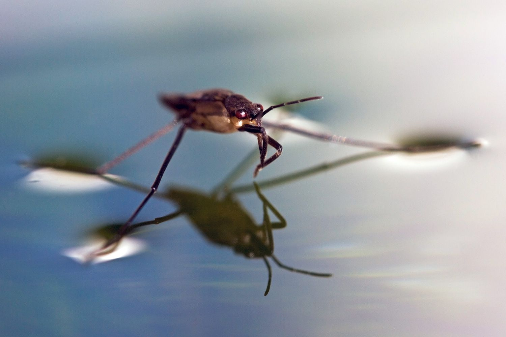
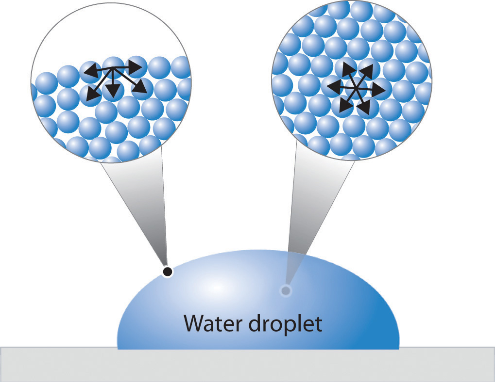
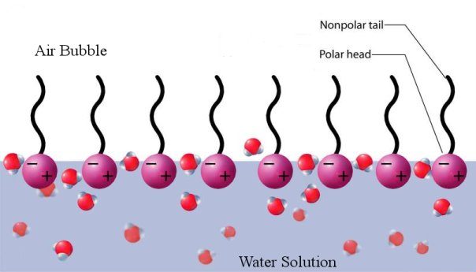
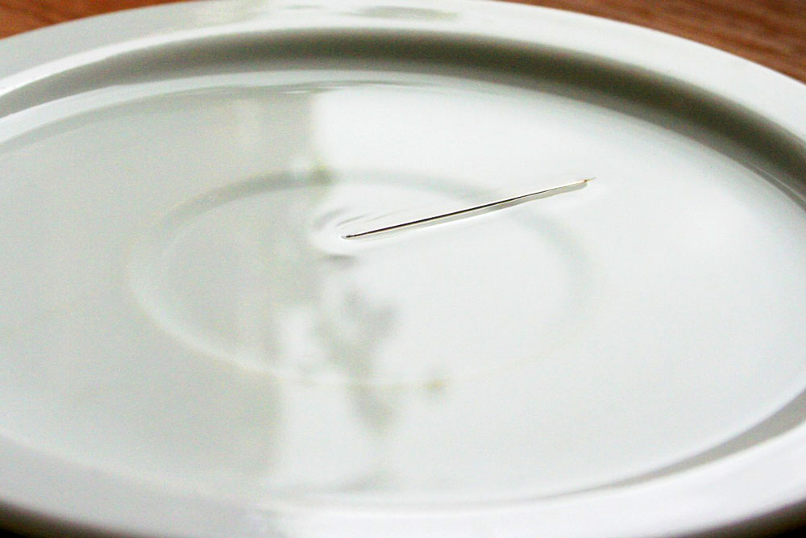

In our series of experiments, we did serveral experiments testing how soap
"killed" the surface tension of water. In our first experiment, we witnessed
soap pop surface tension in a cup, causing the water to overflow over the
edge of the cup. In the other test that we did, we saw the surface tension
in the cup suddenly cause a staple to sink to the bottom of the cup and
a toothpick to float after dripping a bit of soap into the cup. This may be
cool, but how does this happen?

First of all, what is surface tension? Surface tension is a thin film over
liquid caused by the liquid itself. The film is formed through the attractions
of the particles on the surface of the liquid. Due to this, the surface area of
the liquid is minimized. Water has a naturally high surface tension, explaining
many day to day phenomenons. Surface tension is what causes water to form small
little sphere-like drops of water rather than spread itself out all over a
surface. This explains why water seems to combine into large little droplets
on your car window. Surface tension is also the reason why belly flops hurt
so much. The surface tension has likely not yet been broken and therefore feels
like a solid surface rather than a liquid.

Why does soap kill surface tension? It is the structure of the soap that allows
it to destroy the thin film on the surface of water. The molecules of soap have a
hydrophobic tail and hydrophilic head. This structure is what allows soap to clean.
However, it is this structure that also weakens the attractions of the water
molecules. The hydrophobic tail tries to move away from the water and ends up on the
surface of the water. The soap molecules weaken the hydrogen bonds keeping the water
molecules together, therefore greatly weakening surface tension. Soap is not the only
thing that could break surface tension, but other household items, detergent being an
example, can do this as well.

In the first experiment, we put a single drop of liquid soap into a full cup
of water about to overflow. After the drop of soap hit the water, in just a few
seconds, the surface tension broke and the water overflowed over the edge of
the water. The hydrogen bonds were weakened so the barrier of water causing
surface tension was destroyed, thus causing the cup to overflow. In the second
experiments, we put a single drop of liquid soap into a half-full cup of water
with a bug, staple, and wooden toothpick in it, which were resting on the water's
surface tension. When the soap came into contact with the water, nothing happened
at first due to the failure of soap to mix immediately. In this experiment, one
may even need to mix the water and soap for a bit for this effect to occur. After
the changes took place, the staple sank to the bottom of the water while the
toothpick sank a bit and then began to float. The bug struggled to remain afloat,
but eventually fell to the bottom of the cup with the staple.
The reason why this would be detrimental in a normal environment (such as a lake) is because some bugs rely on the surface
tension of water to stay afloat. These bugs might unexepectedly sink to the bottom and possibly drown,
which would disrupt the ecosystem. In a food chain, if these bugs are one of the main food sources, this
could lead to an entire ecosystem collapse. This would be one example of human interaction with the
environment, causing an ecosystem to change. We also see this in the DO levels and the fish (more on this later)